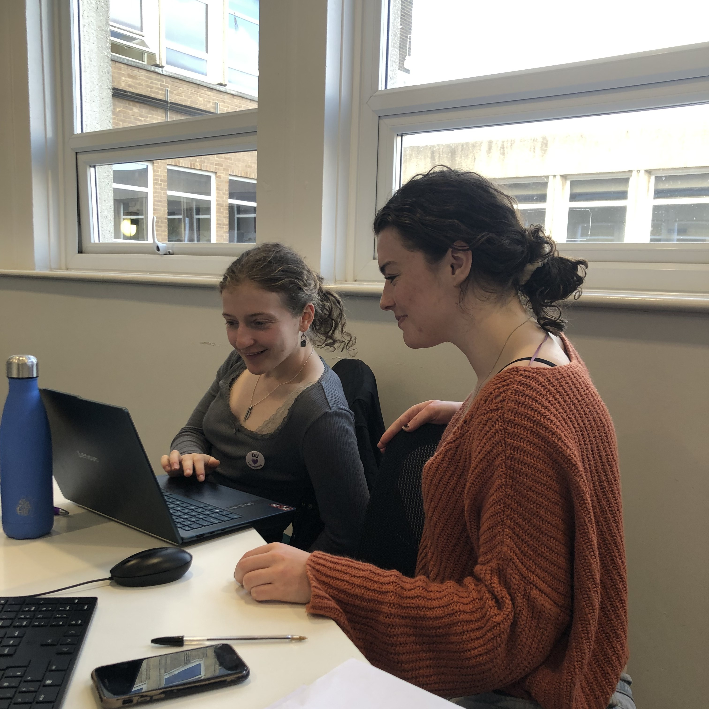
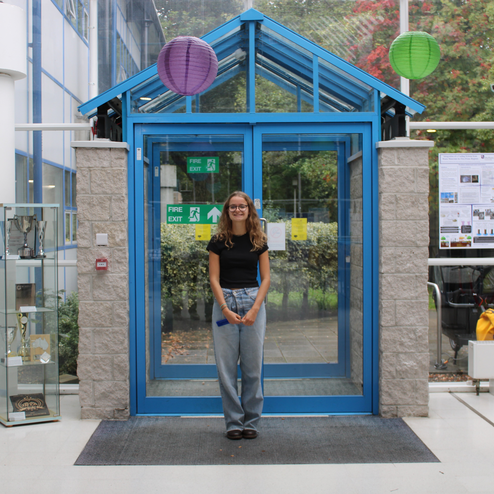
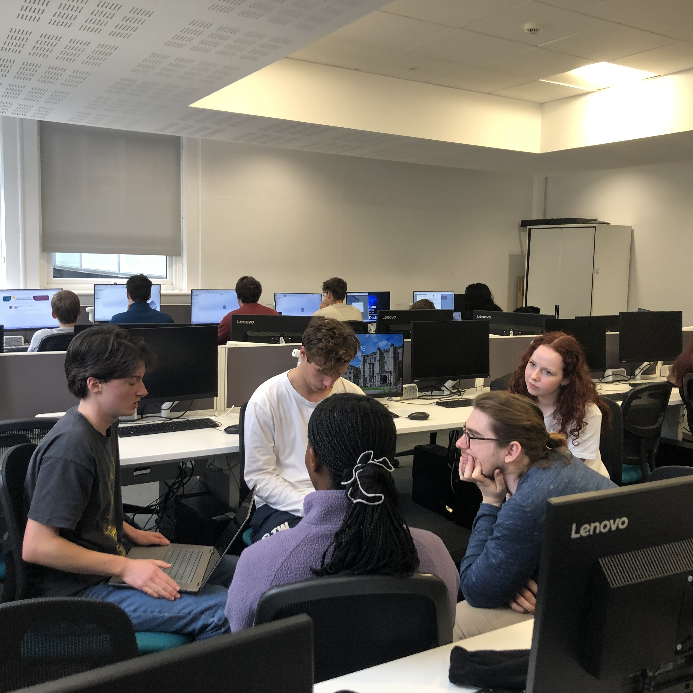
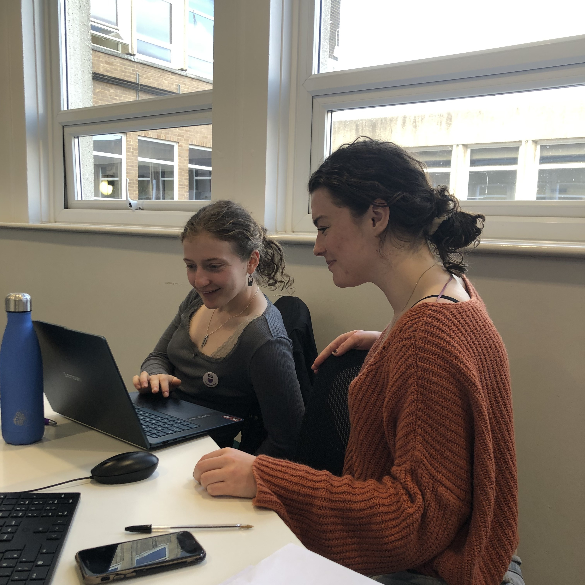
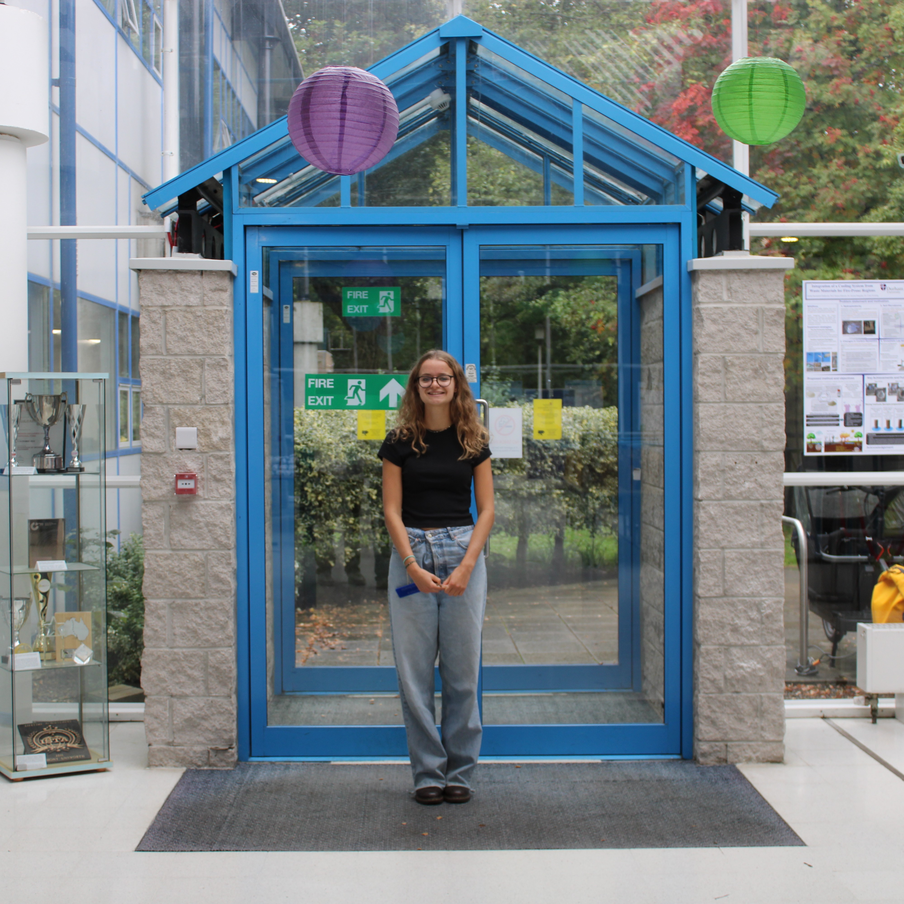
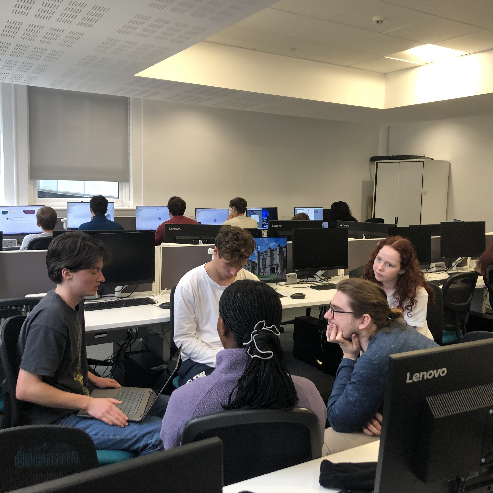

Durham Heart is a cutting-edge, student-led team at Durham University on a bold mission: to design,
prototype, and test a Total Artificial Heart, a life-saving device that could one day support patients
suffering from total heart failure. We are driven by the prospect of saving lives and a passion for
developing novel solutions to a serious global challenge.
We are a recently founded team with interest from the student body, Engineering department and the
University itself. Our team is advised by biomedical engineering academics and clinicians and is comprised
of over 50 students from Year 1 to PhD students, with strong female representation which provides us with a
great base for outreach across the university.
We strive to promote interest in biomedical engineering fields among students of all ages and courses,
showcasing our work and hosting events. As a team we are tackling a real biomedical
engineering problems, collaborate in a multidisciplinary team, gain hands-on technical and design experience
and are a part of something that could change lives.
 




